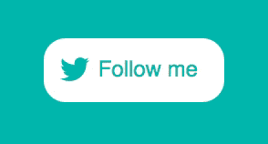
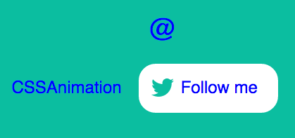
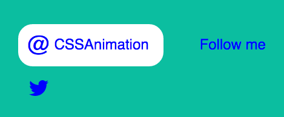
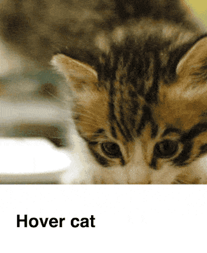

Multiple transitions
So far we’ve covered how a transition creates the movement between one state and another. Next we’ll see what happens when we apply a single transition to an element with multiple changes, and how to use multiple transitions together to subtly improve our animation.
Example 1: Fancy button
While we’ve seen a simple button hover effect already, we can combine multiple transitions into a single button for a more interesting effect.
In this example a hover effect combines several changes of state, but all are defined by a single transition:
transition: transform 0.4s cubic-bezier(.72,-0.61,.25,1.51);
Here’s how it works. The button is made up of two icons and two pieces of text. The initial (non-hover) state is that the “Follow me” text and Twitter icon are positioned inside the button. I position the @ symbol and the “cssanimation” text outside the button like so:
Then I add a hover state, in which the elements outside the button are positioned inside the button, like so:
This is done using CSS transforms. For example, the Twitter symbol is positioned using absolute positioning. When setting it up I positioned it where I wanted using left and top values:
.icon {
position: absolute;
left: 0.75em;
top: 0.75em;
}
Then I add a hover state for the button and position the Twitter icon outside the button with a transform:
a:hover .icon {
transform: translateY(3em);
}
Adding overflow: hidden to the container means that elements outside the button won’t show.
With no transition in place, the icon would suddenly disappear. Since each of these elements inside the button is a span, I can apply the transition to them all at once:
span {
transition: transform 0.4s
cubic-bezier(.72,
–0.61,.25,1.51);
}
This now means that any span elements will be transitioned if their state changes, such as on hover. The same trick is applied to the other parts of the button.
You can see this example in full on CodePen.
Example 2: Background Reveal
In this example I’ve set up a card containing some text, and show the text on hover.
The initial (non-hover) state of the card has the title showing but the paragraph text has an opacity of zero. On hover, we change that to 1 to show the text, and change the height of the text container.
Without transitions, it looks like this. When we hover over the card the change is sudden.
With the addition two transitions to change the mood entirely. Here’s the result.
The first transition (written short-hand this time) looks like this:
transition: all 0.5s cubic-bezier(.48,-0.28,.41,1.4);
This tells the browser to animate all properties over a duration of 0.5 seconds and uses the cubic-bezier transition to give it some bounce. It affects the height of the text container in this case.
The second transition makes the text move. Here a ease-out timing function is used:
transition: all 0.4s ease-out;
There’s a lot that we can achieve by changing states on hover. In this example the info div’s height and the paragraph are both give new values within the .card:hover state.
In this example we use two transitions so that each of the moving parts moves in a different way. Having elements move at different paces can really help add appeal to a transition.
Homework
In this chapter we looked at how multiple effects could be handled by a single transition, and how multiple transitions can be used together.
Can you think of ways these sorts of transitions might help in a project you’re currently working on?
We’ve covered a lot so far. Next we’ll take a look at how we can apply these transitions using JavaScript.